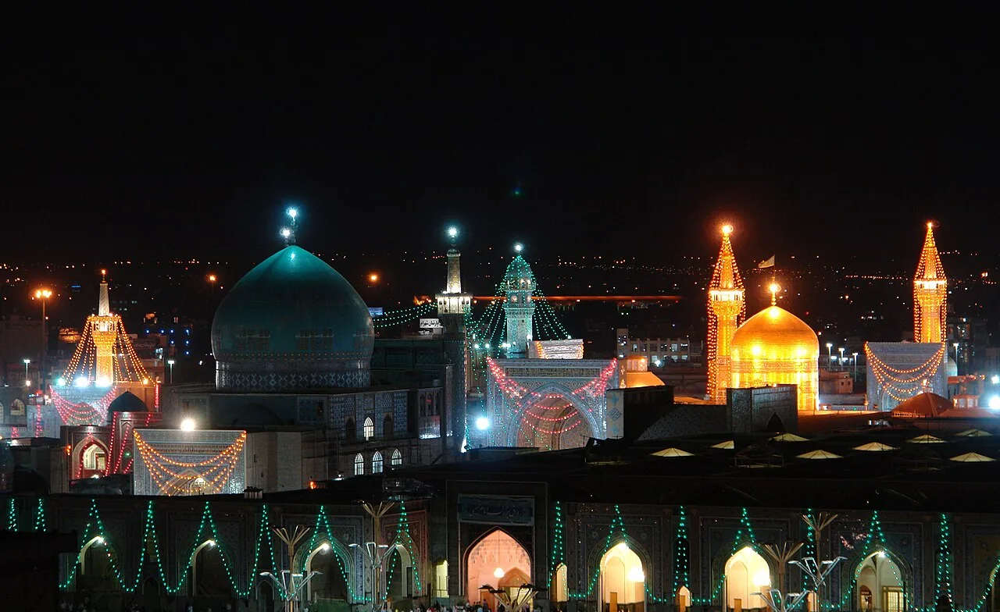

دليل السفر إلى مشهد · زيارة حرم الإمام الرضا، دليل زيارة مشهد، الحرم الرضوي، مشهد المقدسة
دليل زيارة حرم الإمام الرضا في مشهد
الإجابة المختصرة
لزيارة حرم الإمام الرضا في مشهد، خطط لوقت الوصول والتنقل، وتحقق قبل الانطلاق من المداخل والتعليمات والخدمات المتاحة عبر المصادر الرسمية للحرم. راعِ احتياجات أفراد مجموعتك، واترك وقتاً مرناً للزيارة والراحة؛ فالتنظيم المسبق يساعدك على تجربة أهدأ دون افتراض مواعيد أو ترتيبات ثابتة.
زيارة الحرم هي محور رحلة كثير من الزوار إلى مشهد المقدسة. يساعدك هذا الدليل على الاستعداد بهدوء، وتنظيم وقتك، ومعرفة ما ينبغي التحقق منه قبل الذهاب، من دون افتراض أن احتياجات جميع الزوار واحدة.

قبل الزيارة: حضّر الأساسيات
حدد وقتاً مرناً للزيارة، واترك مساحة للراحة والتنقل، خصوصاً إذا كنت تسافر مع أطفال أو كبار السن. احتفظ بعنوان مكان إقامتك ورقم التواصل مع مرافقيك في مكان يسهل الوصول إليه.
تحقق من التعليمات الحالية الخاصة بالدخول، والمرافق المتاحة، والأغراض المسموح بها من المصادر الرسمية أو عند الوصول؛ فقد تتغير الإجراءات في المناسبات وأوقات الازدحام.
اللباس والاحترام داخل الحرم
اختر لباساً محتشماً ومريحاً يناسب طبيعة المكان، واتبع الإرشادات المعلنة عند المداخل. إذا كانت هناك متطلبات خاصة باللباس أو أمانات الأغراض، فاسأل موظفي الموقع قبل الدخول بدلاً من الاعتماد على معلومات قديمة.
احرص على احترام خصوصية الآخرين، وخفّض صوت الهاتف، ولا تصوّر الأشخاص دون موافقتهم. الالتزام بتوجيهات العاملين يساعد على جعل الزيارة أيسر للجميع.
كيف تنظّم وقتك؟
لا تجعل البرنامج مزدحماً بالمواعيد المتتابعة. اختر أوقاتاً بديلة إذا كان الحرم مزدحماً، واتفق مع الأسرة على نقطة واضحة للالتقاء عند الحاجة.
إذا كنت تزور مشهد للمرة الأولى، فاجمع معلومات الوصول والمواصلات قبل الخروج، ولا تعتمد على تقدير المسافة وحده؛ فالوقت الفعلي يتأثر بحركة المرور والازدحام.
للأطفال وكبار السن
احمل ما يحتاجه أفراد الأسرة من ماء وأدوية شخصية مسموح بها وأرقام الاتصال المهمة، مع مراعاة التعليمات المحلية. اجعل فترات الراحة جزءاً من البرنامج، ولا تفترض أن الجميع يستطيع المشي للمدة نفسها.
إذا احتاج أحد أفراد الأسرة إلى مساعدة حركية أو تسهيلات محددة، استفسر عن توفرها قبل الزيارة. لا تفترض وجود خدمة معينة ما لم يؤكدها المسؤولون عنها.
أسئلة شائعة
هل توجد أوقات ثابتة لزيارة الحرم؟
قد تختلف التعليمات وسهولة الدخول بحسب اليوم والمناسبة والازدحام؛ تحقّق من الإرشادات الرسمية أو عند الوصول قبل بناء جدولك.
ما اللباس المناسب لزيارة الحرم؟
اختر لباساً محتشماً ومريحاً، واتبع الإرشادات المعلنة عند المداخل. اسأل المسؤولين عن أي متطلبات خاصة قبل الدخول.
هل يمكن زيارة الحرم مع الأطفال وكبار السن؟
يمكن التخطيط لزيارة عائلية مع تخصيص وقت للراحة والاتفاق على نقطة لقاء واضحة، مع التحقق مسبقاً من أي تسهيلات حركية تحتاجها الأسرة.
هل توجد مرافق أو خدمات متاحة لجميع الزوار؟
لا تفترض توفر خدمة محددة أو استمرارها؛ اسأل إدارة الموقع أو العاملين عند الوصول عن المرافق المتاحة في تاريخ زيارتك.
كيف أستعد للزيارة إذا كنت قادماً من خارج إيران؟
احتفظ بعنوان الإقامة ووسيلة التواصل مع مرافقيك، وخطط للوصول والتنقل مسبقاً، وتحقق من وثائق السفر ومتطلبات الدخول من المصادر الرسمية.
الخطوة التالية
إذا كنت تخطط لزيارة مشهد وتريد ترتيب الوصول أو الإقامة أو برنامج الرحلة، اطلع على صفحة الخدمات أو أرسل استفسارك إلى حسين عبر واتساب.